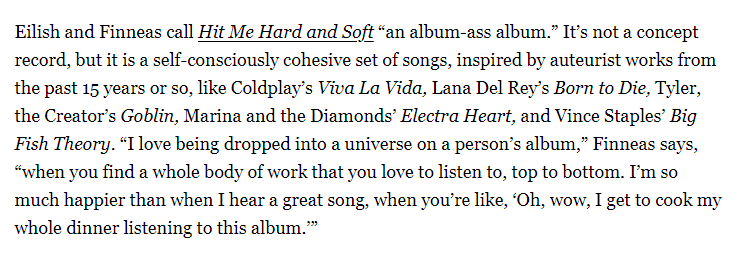

Billie Eilish es una artista internacional de 22 años, que es furor en todo el mundo. Hoy en dia, millones de personas la siguen y escuchan su musica, desde niños hasta adultos. Ha hecho 3 giras internacionales por todo el mundo, cantando todos sus sencillos como ¨My strange addiction¨ y ¨When thee Partys over¨. Actualmente tiene 2 albumes de estudio; When we all fall asleep y Happier than ever, y un EP; Dont Smile At Me. Este ultimo año ha sido tendencia en todos lados, su cancion ¨What Was I Made For¨, la cual escribio para el soundtrack original de la pelicula Barbie.
Eilish ha batido muchos records en su corta carrera; uno de ellos es ser la artista mas joven en ganar las 4 categorias principales de los Grammys y la artista mas jovenes en ganar dos años seguidos el Oscar a mejor cancion original.
Ahora mismo, todos los fans estan en la espera de su tercer album de estudio ¨Hit Me Hard and Soft

Traduccion
Eilish y Finneas llaman a Hit Me Hard and Soft "un álbum-fuego". No se trata de un disco conceptual, pero sí de un conjunto de canciones autoconscientemente cohesionado, inspirado en obras de autor de los últimos 15 años aproximadamente, como Viva La Vida de Coldplay, Born to Die de Lana Del Rey, Goblin de Tyler, the Creator, Electra Heart de Marina and the Diamonds y Big Fish Theory de Vince Staples. "Me encanta sumergirme en el universo del álbum de una persona", dice Finneas, "cuando encuentras toda una obra que te encanta escuchar de arriba abajo. Soy mucho más feliz que cuando escucho una gran canción, cuando dices: 'Oh, vaya, me voy a cocinar toda la cena escuchando este disco'".